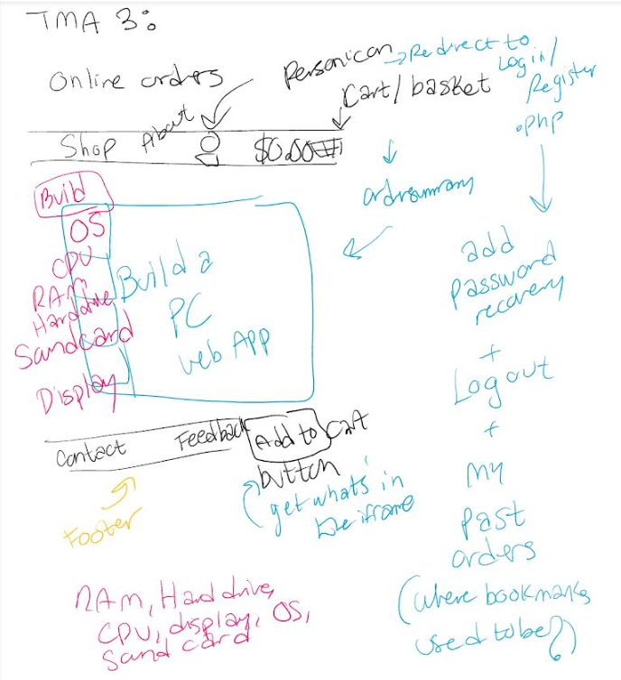
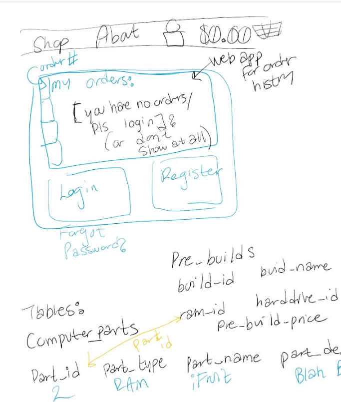

COMP 466 Advanced Technologies for Web-Based Systems
TMA 3A
Erika Racette ID:
June 15, 2024 - April 30, 2025
Date revised and completed: September 22, 2026
Estimated hours: 60
This is a Web Page that fulfills the requirements of parts 1, 2, 3, 4 of TMA 3A
Instructions:
- Copy and Paste all assignment files inside TMA3A into a localhost server
...\TMA3A\tma3a.htm- Open
tma3a.htmin a browser to get started and interact with the web page -
To run Parts 1-4 locally, open a terminal in the associated
part1,part2,part3, orpart4project folder and run:dotnet run - Open the localhost URL shown by ASP.NET in the terminal.
-
Use the nav menu to navigate to each part of the TMA:
- Documentation: About
- Part 1: Visitor Count
- Part 2: Slideshow
- Part 3: Online Computer Store - Cookies
- Part 4: Online Computer Store - Database
.../TMA3A/shared/ contains shared files between parts 1, 2, 3, and 4:
shared/js/
-
script-navbar.js- manages navigation between page sections, AJAX requests, and shared interface functionality -
script-shared-comp-store.js- contains functions shared between Parts 3 and 4 for the computer store interface, cart, pricing, and orders
shared/styles/
-
online-computer-store/- contains shared images for Parts 3 and 4, including icons, logos, and initial planning stage images favicon.ico- the browser tab iconstyles.css- contains shared styling for the main TMA3A page-
styles2.css- contains shared styling used by the Part 1, 2, 3, and 4 web applications -
WallpaperDog-20677938.PNG- the header/background image used by the interface
Can be accessed at URL: https://comp466-tma3a.runasp.net/
Part 1
A web application that uses ASP.NET in C# to track with a persistent cookie how many times a client computer has visited the page. The application also displays the IP address of the client computer and the time zone the client computer is located.
Fetching a client's computer tutorial referenced from: https://stackoverflow.com/questions/1091372/getting-the-clients-time-zone-and-offset-in-javascript
Analysis and Design
The application is divided into visit count, IP address, and time zone functionality. ASP.NET handles the persistent visit-count cookie and retrieves the client's IP address. JavaScript retrieves the client's browser time zone and sends it to the server to be displayed on the page.
User Guide:
- Open the Visitor Count page.
- The visit count, IP address, and time zone are displayed automatically.
- Refresh or revisit the page to increase the persistent visit count.
Implementation:
part1/Pages/Index.cshtml
-Main interface for the Visitor Count web application. Displays the visit count,
IP address, and time zone.
part1/Pages/Index.cshtml.cs
-Handles the persistent visit-count cookie, gets the client's IP address, and handles
the request used to display the client's time zone.
part1/wwwroot/js/site.js
-Gets the client's browser time zone and sends it to the ASP.NET application to be displayed.
Localhost Project: .../TMA3A/part1/
Live Server Link: https://comp466-tma3a-p1.runasp.net/
Part 2
A web application using ASP.NET in C# that runs a slideshow of a list of pictures:
Pictures are stored in …/TMA3A/part2/wwwroot/images
Image descriptions are stored in …/TMA3A/part2/wwwroot/images/descriptions.txt
Functionalities that were reused from TMA1:
- The caption is shown under each picture in the show.
- There is a button to start/stop the show.
- There are controls to toggle the show between random and sequential.
- There are buttons to manually turn the show backward or forward, only if the show is in sequential mode.
- Reused the same 20 pictures from TMA1
Analysis and Design
The image information is stored in descriptions.txt instead of being hard coded into the page. ASP.NET reads the filename and caption information from the text file and sends the image list to the page. JavaScript handles displaying the images, captions, slideshow order, start/stop button, previous/next buttons, and transition effects.
User Guide:
- Open the Slideshow page
- Choose either sequential or random order
- Choose a transition effect
- Click Start to begin the slideshow and 'Stop' to stop it
- When sequential mode is selected, use the previous and next buttons to manually move between pictures
Implementation:
part2/Pages/Index.cshtml
-The main interface for the slideshow. Contains the image canvas, caption,
slideshow controls, order selection, and transition selection.
part2/Pages/Index.cshtml.cs
-Reads the image filenames and captions from descriptions.txt and provides
the image information to the page.
part2/wwwroot/js/site.js
-Displays the images and captions and handles random/sequential order,
previous/next controls, start/stop functionality, and the slideshow transition effects.
part2/wwwroot/images/descriptions.txt
-Stores the filenames and descriptions/captions for the slideshow pictures.
Tutorials used:
Using images -
- https://developer.mozilla.org/en-US/docs/Web/API/Canvas_API/Tutorial/Using_images
- https://www.w3schools.com/tags/canvas_clearrect.asp
Transformations -
Animations -
Localhost Project: .../TMA3A/part2/
Live Server Link: https://comp466-tma3a-p2.runasp.net/
Part 3
An online computer store in which customers can select a prebuilt computer from a list and customize it by replacing some components in its standard configuration with others. Customers can then place an order with the online store.
The online computer store, Build Different PCs, has a build-now-pay-later model, where the customer will place an online order, and must go-instore to make their payment so their build can be started. This skips the online payment process functionality.
Analysis and Design
The online stores that I visited to study their designs and functionalities were:
- Bestbuy.ca
- Newegg.ca
- iBUYPOWER.ca
- Amazon.ca
I build a custom PC on each website and I documented the ordering process. My notes include:
- Having a pre-selected PC to begin customizing with parts (even though all parts were fully customizable). Have a base to start the customization process.
- Always having a visual/description of each computer part that your build currently is equipped with on each and every page – in the same exact area for consistency.
- Bestbuy and Newegg seemed a bit cluttered, and you really had to learn and focus on the main parts of the customization process. Would be good to simplify process and surrounding areas as to not overwhelm/confuse.
- Although cluttered, Newegg had extensive information on each and every computer part.
- Regardless, on all three websites, computer parts were categorized very clearly.
- Preferred Amazon.ca's checkout process as the total price breakdown, and final price were visually displayed in a way that was easy to understand.
Conclusion for web application design: Aim for a simple design with clear instructions and easy checkout process. Should also design part4 simultaneously to be able to reuse functions, variables, files, etc.
Requirements:
- Database tables with information of all computer parts, a table for prebuilts and a column for each of their parts, and a orders table that saves each PC configuration and their individual parts, whos _id would be a reference to the parts table.
- Simple name and Logo, would help if name suggested the purpose of the web app.
- Populate and submit things using only response of database, double-check before submitting information to see if it exists in database.
Planned functions:
loadParts()orinitializeParts()loadPrebuilts()orinitializePrebuilts()preselectPrebuiltRadios()getCookie()setCookie()updateCookie()deleteCookie()populateSection()– section would be either prebuilts, OS, RAM, etcupdateTotalPrice()updateCurrentConfig()updateCart()placeOrder()orsubmitOrder()populateAccount()getAccountDetails()modifyOrder()deleteOrder()populateCartSummary()populateOrderSuccess()manageOrder()cancelOrder()resetSection()– clear contents of a section for re-loads/cart reset
For parts 3 and 4… use a shared function file and structure in a way to reuse same assets. Have individual function files for functions that must be different.


The web application functions similar to an online store, a name, logo, information/about section, menus for navigation, contacts and a feedback form.
There are a list of prebuilt computers with their individual parts and components: RAM, hard drive, CPU, display, OS, and soundcard. The information about these products is hard coded into the HTML of index.html HTML.
A customer can select a prebuilt computer with default/standard configuration and pricing and then customize it by changing its configuration by replacing one component with another.
Whenever a change has been made by the customer, the price total is dynamically updated in the top right (should have consistent /permanent area for price) to always be displayed to the customer.
After the customer has decided to hit the Add to Cart button, all of their configurations are shown, with each selection categorized, including each part's individual price before hitting check-out.
Cookies are used to store and track customer selections and create a real online order scenario.
All part descriptions were fetched from Bestbuy.ca and Newegg.caAll files for part 3 are in …TMA3A/part3
All related images for this part are in
…/TMA3A/shared/styles/online-computer-store
User Guide:
- Select a prebuilt computer to begin with its standard configuration.
- Use the navigation menu to view and change the OS, CPU, RAM, hard drive, sound card, and display.
- The cart price updates when a component is changed.
- Open the cart to review the selected configuration and individual prices.
- Place the order to save it using browser cookies.
- Open the Account page to view previously placed orders.
- Existing orders can be modified or deleted.
Implementation:
part3/Pages/Index.cshtml
-The main interface for the Build Different PCs online store. Contains the store
navigation, prebuilts, computer-part selections, cart, Account page, Contact page,
and ordering interface.
part3/wwwroot/js/site.js
-Handles functionality specific to Part 3, including initializing prebuilt/component
selections and storing, retrieving, modifying, and deleting orders using the browser
Orders cookie.
shared/js/script-shared-comp-store.js
-Contains functions shared by Parts 3 and 4, including the cart object, component
information, dynamic pricing, cart summaries, account order displays, and shared
interface functionality.
Localhost Project: .../TMA3A/part3/
Live Server Link: https://comp466-tma3a-p3.runasp.net/
Part 4
Continuing part 3 additions:
- A customer management module to the online computer store, which includes new customer registration, customer authentication, and password recovery.
- An order management module that saves orders for registered customers and allows registered customers to view a list and details of previously placed orders.
- Managing existing orders by modifying their parts or deleting an order.
Analysis and Design
Part 4 reuses the interface and shared functions created for Part 3, but replaces the cookie-based order storage and hard-coded product information with a SQL Server database.
The application is divided into customer authentication, computer part/prebuilt retrieval, cart/order functionality, order management, and database functionality.
ASP.NET API controllers handle authentication and database requests. JavaScript sends asynchronous requests to the controllers and uses the returned information to dynamically populate the computer store.
ASP.NET session storage identifies the currently logged-in customer so only that customer's orders are retrieved or modified.
The database is accessed using Entity Framework Core.
The database tables used for part4 are:
- users: holds UserID, email address, hashed password, and recovery token for each user
- computer_parts: holds PartID, part name, part type/category, price, and description
- prebuilts: holds BuildID, build name, build description, and references to the OS, CPU, RAM, hard drive, sound card, and display in computer_parts
- orders: holds OrderID, UserID, order date, order status, build information, selected part IDs, and total order price
Store all the details of the computers and components and replace all the data hard coded into the program files with data from the database.
User Guide:
- Register a new account or log in with an existing account.
- Select a prebuilt computer and customize the individual components.
- Open the cart to review the configuration.
- Place the order to save it to the database.
- Open the Account page to view previous orders.
- Existing unpaid orders can be modified or deleted.
- If the password is forgotten, enter the registered email address under Forgot Password.
- A password recovery email containing a recovery link will be sent.
- Open the link and enter the registered email and a new password.
- After resetting the password, log in using the new password.
Implementation:
part4/Pages/Index.cshtml
-The main interface for the database version of Build Different PCs.
Contains the store navigation, product sections, cart, ordering interface,
Account page, login, registration, and password recovery forms.
part4/Program.cs
-Configures Razor Pages, API controllers, ASP.NET session storage, the SQL Server
connection through Entity Framework Core, static files, routing, and database
creation using Database.EnsureCreated().
part4/Pages/Index.cshtml.cs
-Contains the Razor Page model and clears the existing user session when the page is newly opened.
part4/Models/OnlineComputerStore.cs
-Defines the Entity Framework Core database context and the ComputerParts,
PreBuilts, Orders, Users, and Cart models. Configures the database relationships
and initial computer part/prebuilt data.
part4/Controllers/CompPartsController.cs
-Handles retrieving computer parts and prebuilts from the database and retrieving,
submitting, modifying, and deleting customer orders.
part4/Controllers/AuthController.cs
-Handles new customer registration, login, password hashing, password recovery,
recovery email delivery, and resetting the customer's password using a recovery token.
part4/wwwroot/js/site.js
-Handles Part 4 database requests and order management functionality.
part4/wwwroot/js/authentication.js
-Handles registration, login, password recovery requests, recovery tokens,
and password-reset responses.
shared/js/script-shared-comp-store.js
-Contains computer-store functions shared between Parts 3 and 4.
Localhost Project: .../TMA3A/part4/
Live Server Link: https://comp466-tma3a-p4.runasp.net/
The database structure is defined using Entity Framework Core in
OnlineComputerStore.cs. Program.cs uses
Database.EnsureCreated() to create the database from the model
if it does not already exist. The following SQL is the equivalent SQL Server
table definitions and initial seed data:
SQL Table Definitions for Part 4
-- Create Users table
CREATE TABLE Users (
UserID INT IDENTITY(1,1) PRIMARY KEY,
Email NVARCHAR(MAX) NOT NULL,
Password NVARCHAR(MAX) NOT NULL,
RecoveryToken NVARCHAR(MAX) NOT NULL
);
-- Create ComputerParts table
CREATE TABLE ComputerParts (
PartID INT IDENTITY(1,1) PRIMARY KEY,
PartName NVARCHAR(MAX) NOT NULL,
PartType NVARCHAR(MAX) NOT NULL,
Price DECIMAL(18,2) NOT NULL,
Description NVARCHAR(MAX) NOT NULL
);
-- Create PreBuilts table
CREATE TABLE PreBuilts (
BuildID INT IDENTITY(1,1) PRIMARY KEY,
BuildName NVARCHAR(MAX) NOT NULL,
BuildDescription NVARCHAR(MAX) NOT NULL,
OSID INT NOT NULL,
CPUID INT NOT NULL,
RAMID INT NOT NULL,
HardDriveID INT NOT NULL,
SoundCardID INT NOT NULL,
DisplayID INT NOT NULL,
FOREIGN KEY (OSID) REFERENCES ComputerParts(PartID),
FOREIGN KEY (CPUID) REFERENCES ComputerParts(PartID),
FOREIGN KEY (RAMID) REFERENCES ComputerParts(PartID),
FOREIGN KEY (HardDriveID) REFERENCES ComputerParts(PartID),
FOREIGN KEY (SoundCardID) REFERENCES ComputerParts(PartID),
FOREIGN KEY (DisplayID) REFERENCES ComputerParts(PartID)
);
-- Create Orders table
CREATE TABLE Orders (
OrderID INT IDENTITY(1,1) PRIMARY KEY,
UserID INT NOT NULL,
OrderDate DATETIME2 NOT NULL,
OrderStatus INT NOT NULL,
BuildID INT NOT NULL,
BuildName NVARCHAR(MAX) NOT NULL,
BuildDescription NVARCHAR(MAX) NULL,
OSID INT NOT NULL,
CPUID INT NOT NULL,
RAMID INT NOT NULL,
HardDriveID INT NOT NULL,
SoundCardID INT NOT NULL,
DisplayID INT NOT NULL,
TotalPrice DECIMAL(18,2) NOT NULL
);SQL Inserts for Part 4
-- Computer Parts
SET IDENTITY_INSERT ComputerParts ON;
INSERT INTO ComputerParts (PartID, PartType, PartName, Price, Description)
VALUES
-- Operating Systems
(1, 'OS', 'Windows 11 Home', 199.99, 'A user-friendly OS designed for personal and professional use. The refreshed design allows you to do a variety of things effortlessly.'),
(2, 'OS', 'Windows 11 Pro', 299.99, 'Offers advanced features like enhanced security and management tools for professionals and businesses. Great for smarter collaboration.'),
(3, 'OS', 'Ubuntu Linux', 0.00, 'A free open-source OS known for its stability and security, favored by developers and system administrators. Powers the work of engineers across the globe.'),
(4, 'OS', 'Windows 10 Home', 115.99, 'A versatile and reliable OS for personal use with a variety of built-in applications. One of the best experience for starting fast and getting things done.'),
-- CPUs
(5, 'CPU', 'Intel Core i9-13900K', 699.99, 'A high-performance CPU perfect for gaming and heavy workloads with advanced multitasking support. Has the power to provide you with advanced technologies.'),
(6, 'CPU', 'AMD Ryzen 9 7950X 16-Core', 739.99, 'Provides exceptional performance for gaming, content creation, and virtual machine workloads. Delivers game changing performance.'),
(7, 'CPU', 'Intel Core i7-12700K', 469.99, 'A high-performance processor for mid-level activities with impressive efficiency. Great for productivity, gaming, and content creation.'),
(8, 'CPU', 'AMD Ryzen 7 5800XT 8-Core', 249.99, 'Great for gamers and creators, with a solid performance in multi-threaded tasks and gaming. Allows you to enjoy multitasking, enhanced speed, and computing power.'),
-- RAM
(9, 'RAM', 'G.SKILL TridentZ RGB Series 32GB', 89.99, 'Ideal for gamers, offers fast response times and efficient multitasking performance while having a signature design.'),
(10, 'RAM', 'CORSAIR Vengeance LPX 32GB', 79.99, 'Designed for high-performance overclocking, great looks, performance, and compatibility.'),
(11, 'RAM', 'CORSAIR Vengeance LPX 64GB', 132.99, 'High-performance RAM for next level gaming, video editing, and professional-grade tasks.'),
(12, 'RAM', 'CORSAIR Vengeance LPX 8GB', 59.99, 'A budget-friendly option for light gaming, browsing, and basic tasks.'),
-- Hard Drives
(13, 'HardDrive', 'Samsung 990 Pro 1TB NVMe PCI-e', 169.99, 'A high-speed storage solution that reduces load times and ensures system stability with faster file access.'),
(14, 'HardDrive', 'Seagate Barracuda 2TB', 89.99, 'Provides ample storage for larger files and data, though slower than SSDs.'),
(15, 'HardDrive', '500GB SATA SSD', 89.99, 'Great for upgrading your computer with faster load times, better system responsiveness, and enhanced security.'),
(16, 'HardDrive', 'Seagate IronWolf 4TB', 144.99, 'An improved data reliability option for storing large amounts of data, especially for media storage.'),
-- Sound Cards
(17, 'SoundCard', 'Creative Sound BlasterX AE-5', 219.99, 'High-end sound card with 32-bit/384kHz playback, customizable RGB lighting, and powerful amplification for headphones.'),
(18, 'SoundCard', 'ASUS Xonar AE', 69.99, 'Affordable PCIe sound card with 7.1 surround sound, perfect for gaming and media playback.'),
(19, 'SoundCard', 'Creative Sound Blaster AE-9', 489.99, 'All-new sound blaster delivers pure and pristine audio quality. Fantastic for professional music production and recording.'),
(20, 'SoundCard', 'Creative High-performance PCI-e', 157.99, 'Gaming-focused sound card with SBX Pro Studio technology, designed for immersive audio experiences.'),
-- Displays
(21, 'Display', 'Samsung Odyssey Neo G7 43" 4K Ultra HD', 849.99, 'This 43-inch monitor features Quantum Matrix Technology and VESA Display HDR600 that delivers extraordinary and realistic pictures with deep, vivid, and crisp details.'),
(22, 'Display', 'LG UltraGear 27" QHD 240Hz', 799.99, 'With a 16:9 aspect ratio and 240Hz refresh rate, this monitor delivers a sharp display and smooth motion ideal for competitive gaming.'),
(23, 'Display', 'Dell 27" WQHD 100Hz 4ms IPS LED Monitor', 239.99, 'A 27-inch gaming monitor with USB-C connectivity. LED monitor features IPS panel and 2560 x 1440 resolution.'),
(24, 'Display', 'BenQ 27" FHD 60Hz 5ms GTG IPS LCD Monitor', 209.99, 'Enjoy an almost frameless viewing experience with reduced bezel size at 27". Great for gaming and multimedia consumption.'),
-- Extra Operating Systems
(25, 'OS', 'Fedora Linux', 0.00, 'A cutting-edge, free open-source Linux OS, popular among developers for its innovation and security. Great for workstation use.'),
(26, 'OS', 'Windows 10 Pro', 149.99, 'A robust OS offering business-oriented features and enhanced security, perfect for small businesses and power users.'),
-- Extra CPUs
(27, 'CPU', 'Intel Core i5-13600K', 329.99, 'A high-efficiency CPU offering a great balance of gaming and productivity at a more affordable price.'),
(28, 'CPU', 'AMD Ryzen 5 7600X 6-Core', 249.99, 'A strong mid-range processor ideal for gaming and everyday workloads with excellent single-threaded performance.'),
-- Extra RAM
(29, 'RAM', 'Kingston Fury Beast 16GB', 64.99, 'High-performance memory with heat spreaders, great for gamers and system builders.'),
(30, 'RAM', 'Crucial Ballistix 32GB', 84.99, 'Designed for high-performance overclocking, perfect for gamers and performance enthusiasts.'),
-- Extra Hard Drives
(31, 'HardDrive', 'Western Digital Blue 1TB SATA SSD', 99.99, 'Reliable and fast solid-state drive for upgrading laptops and desktops for faster boot times.'),
(32, 'HardDrive', 'Crucial MX500 2TB SATA SSD', 139.99, 'Offers a perfect blend of speed, security, and reliability for daily computing and gaming.'),
-- Extra Sound Cards
(33, 'SoundCard', 'EVGA NU Audio Pro', 299.99, 'A premium sound card built for audiophiles, offering rich and detailed audio output with a stylish design.'),
(34, 'SoundCard', 'ASUS Essence STX II', 249.99, 'Delivers high-fidelity audio with ultra-low distortion, great for music production and critical listening.'),
-- Extra Displays
(35, 'Display', 'Acer Predator XB283K 28" 4K UHD 144Hz', 699.99, 'Premium gaming monitor featuring 4K resolution and 144Hz refresh rate for ultra-smooth visuals.'),
(36, 'Display', 'MSI Optix G273QF 27" QHD 165Hz', 399.99, 'A great balance of high refresh rate and resolution, ideal for competitive gaming and content creation.');
SET IDENTITY_INSERT ComputerParts OFF;
-- Prebuilt Computers
SET IDENTITY_INSERT PreBuilts ON;
INSERT INTO PreBuilts
(BuildID, BuildName, OSID, CPUID, RAMID, HardDriveID, SoundCardID, DisplayID, BuildDescription)
VALUES
(1, 'Mid Essentials', 1, 5, 9, 13, 17, 21, 'Created for serious gamers and streamers, this build delivers ultra-fast load times, high frame rates, and immersive 4K visuals with powerful audio support.'),
(2, 'Epic Studio', 2, 6, 10, 14, 18, 22, 'Built for creators and professionals, this high-performance system excels at video editing, rendering, coding, and a multitasking workflow.'),
(3, 'iTower', 3, 7, 11, 15, 19, 23, 'Ideal for advanced multitasking, music production, or Linux-based development, this setup balances performance with ample memory and professional-grade audio.'),
(4, 'SmartHome PC', 4, 8, 12, 16, 20, 24, 'Designed for home and school use, this build offers reliable performance for web browsing, homework, media playback, and digital storage.');
SET IDENTITY_INSERT PreBuilts OFF;Database Access SQL
The application accesses SQL Server using Entity Framework Core and LINQ instead of executing handwritten SQL statements directly. The following SQL represents the equivalent database operations used by the application.
-- Retrieve all computer parts
SELECT *
FROM ComputerParts;
-- Retrieve all prebuilt computers
SELECT *
FROM PreBuilts;
-- Find a user by email for login or password recovery
SELECT *
FROM Users
WHERE Email = @Email;
-- Register a new user
INSERT INTO Users (Email, Password, RecoveryToken)
VALUES (@Email, @Password, @RecoveryToken);
-- Update a password recovery token
UPDATE Users
SET RecoveryToken = @RecoveryToken
WHERE UserID = @UserID;
-- Reset a user's password and replace the recovery token
UPDATE Users
SET Password = @Password,
RecoveryToken = @RecoveryToken
WHERE UserID = @UserID;
-- Retrieve orders for the logged-in customer
SELECT *
FROM Orders
WHERE UserID = @UserID;
-- Submit a new order
INSERT INTO Orders
(
UserID,
OrderDate,
OrderStatus,
BuildID,
BuildName,
BuildDescription,
OSID,
CPUID,
RAMID,
HardDriveID,
SoundCardID,
DisplayID,
TotalPrice
)
VALUES
(
@UserID,
@OrderDate,
@OrderStatus,
@BuildID,
@BuildName,
@BuildDescription,
@OSID,
@CPUID,
@RAMID,
@HardDriveID,
@SoundCardID,
@DisplayID,
@TotalPrice
);
-- Modify an existing order
UPDATE Orders
SET OrderDate = @OrderDate,
BuildID = @BuildID,
BuildName = @BuildName,
BuildDescription = @BuildDescription,
OSID = @OSID,
CPUID = @CPUID,
RAMID = @RAMID,
HardDriveID = @HardDriveID,
SoundCardID = @SoundCardID,
DisplayID = @DisplayID,
TotalPrice = @TotalPrice
WHERE OrderID = @OrderID
AND UserID = @UserID;
-- Delete an order
DELETE FROM Orders
WHERE OrderID = @OrderID
AND UserID = @UserID;Background wallpaper retrieved with free use from: https://wallpaper.dog/sanrio-cinnamoroll